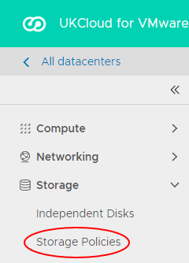
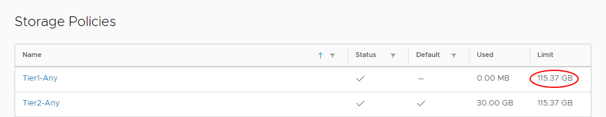
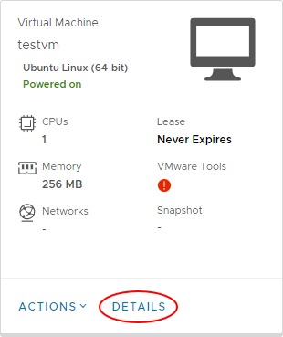
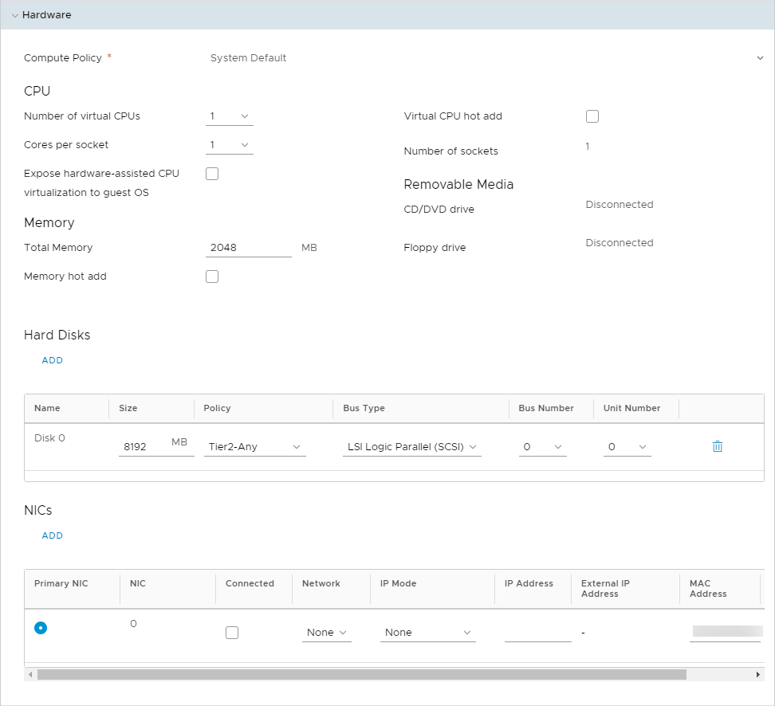

How to increase block storage for a virtual machine
Overview
You can increase the block storage available for a virtual machine (VM) as long as the increase does not exceed the limits of your storage policy allocation.
Before you begin
Before increasing the size of block storage for a VM, consider the following:
If the VM has a snapshot, you'll need to remove this before making changes to the hard disk size. You may need to perform a re-scan from the OS level.
To ensure optimal vMotion performance, each hard disk should not exceed 2TB. For more information, see Virtual machine disk limits and considerations.
There is an upper limit of 2TB per disk for any VM that uses UKCloud's Snapshot Protection.
Checking storage allocation
Before increasing block storage for a VM, you can check the storage allocation for its VDC:
In the vCloud Director Virtual Datacenters dashboard, select the VDC that contains your VM.
In the left navigation panel, select Storage Policies.

In the row for the appropriate storage policy, check the Limit column.

Note
If you need to increase the storage allocation for your storage policy, raise a Service Request in the My Calls section of the UKCloud Portal.
Increasing storage for a virtual machine
To increase the amount of block storage for your VM:
In the vCloud Director Virtual Datacenters dashboard, select the VDC that contains your VM.
In the Virtual Machines page, in the card for your VM, click Details.

Expand the Hardware section.
In the Hard Disks section, in the row for the hard disk that you want to increase, enter the new value (in MB) in the Size field.

If required, you can add more hard disks to your VM by clicking Add and specifying the details for the new disk.
When you're done, click Save.
Feedback
If you find a problem with this article, click Improve this Doc to make the change yourself or raise an issue in GitHub. If you have an idea for how we could improve any of our services, send an email to feedback@ukcloud.com.